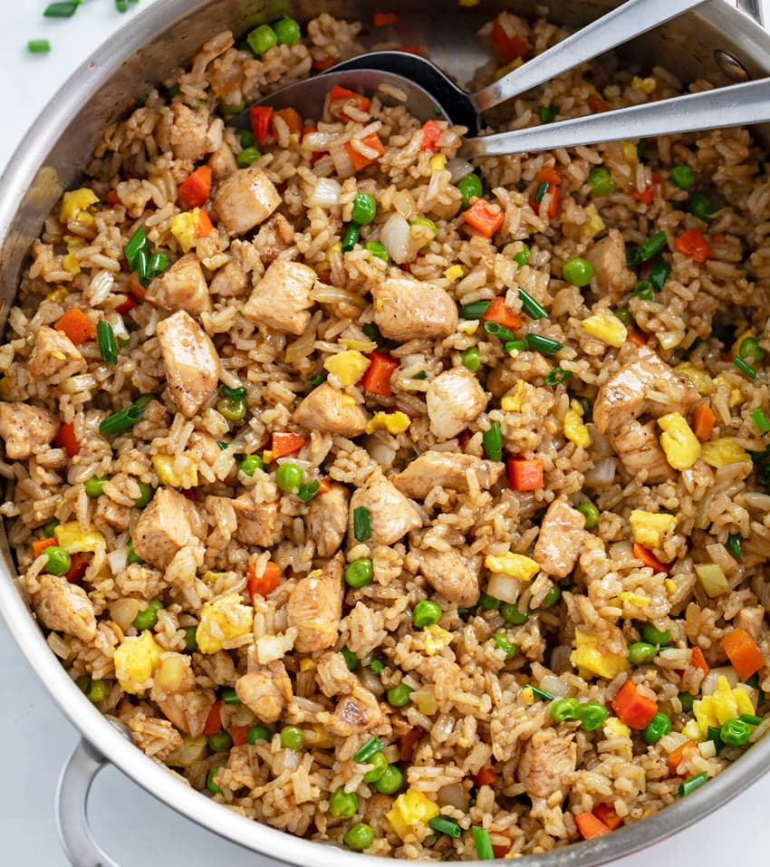

CHICKEN FRIED RICE
If I had to choose a dish I have to eat for the rest of my life, it would be fried rice.
Ingredients:
- 3 cups of cooked, chilled rice. Day-old cold rice is perfect.
- 2 beaten eggs.
- 2 diced chicken thighs. You can fry some wings and drumsticks to eat with, but this doesn't included in this tutorial.
- 2 gloves of minced garlic
- 1 cup mixed veggies: carrots, onions, peas, corn, bell pepper, ... depends on your appetite
- 3 tablespoons of soy sauce
- 1 tablespoon sesame oil (optional), and vegetable oil.
- Seasoning to taste: salt, pepper,...
Steps to make chicken fried rice:
- Marinate the chicken with soy sauce, rice wine, and cornstarch for 15-20 minutes.
- Stir-fry chicken in preheated pan with vegetable oil until cooked and set it aside.
- In the same wok or pan, add the remaining vegetable oil, and stir-fry veggies for 2-3 minutes on high heat until they soften.
- Push the vegetables to one side of the pan and pour the beaten eggs into the other side. Scramble the eggs until they are cooked.
- Add the cold rice to the skillet with the cooked vegetables and eggs. Stir-fry everything together, breaking up any clumps of rice.
- Add the cooked chicken back into the pan and continue to stir-fry for a few more minutes until everything is heated through.
- Final step, pour the soy sauce over the fried rice and stir evenly. Season with salt and pepper to taste. If desired, drizzle a small amount of sesame oil over the rice for extra flavor. Garnish with chopped green onions if you like.
Nutritional Information
Nutrition Facts
Serving Size 1 bow (about 400g)
Serving Per Recipe 2
| Amount Per Serving | ||
|---|---|---|
| Calories 530 | Calories from Fat 143 | |
| % Daily Value* | ||
| Total Fat 21g | 27% | |
| Saturated Fat 5g | 25% | |
| Trans Fat 0g | ||
| Cholesterol 55mg | 18% | |
| Sodium 580mg | 25% | |
| Total Carbohydrate 41g | 15% | |
| Dietary Fiber 3g | 11% | |
| Total Sugars 1g | ||
| Protein 400g | ||
Some tips for a successful fried rice:
- Using cold rice is the best for making fried rice because it's less sticky.
- Have all your ingredients chopped and ready before you start cooking. Fried rice cooks quickly, so you won't have much time to chop things as you go.
- High heat is important to make good fried rice. A good fried rice is the right balance between crispness and softness of ingredients. If rice is fried under low heat, it will be dried.
- Keep stirring constantly. This helps distribute heat evenly and prevents sticking or burning.
- Taste the rice as you cook to ensure it meets your flavor preference.
- It's better to serve with some fried wings and chili sauce.
I like chicken fried rice because of its delicious and versatile flavor. It offers a mix of textures, is easy to prepare, and provides a comforting, balanced meal. It can be made with leftover ingredients or fresh ones; chicken fried rice is a go-to dish for enjoying a quick, flavorful meal.

A Bow of Fried Rice